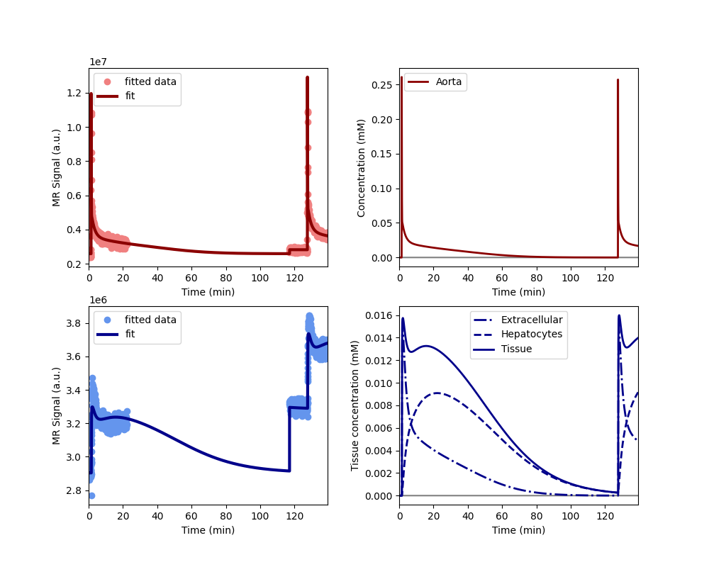
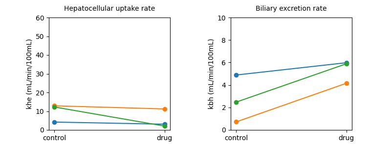

Note
Go to the end to download the full example code.
Clinical - rifampicin effect in subjects with impaired liver function#
The data show in this example aimed to demonstrates the effect of rifampicin on liver function of patients with impaired function. The use case is provided by the liver work package of the TRISTAN project which develops imaging biomarkers for drug safety assessment.
The data were acquired in the aorta and liver in 3 patients with dynamic gadoxetate-enhanced MRI. The study participants take rifampicin as part of their routine clinical workup, with an aim to promote their liver function. For this study, they were taken off rifampicin 3 days before the first scan, and placed back on rifampicin 3 days before the second scan. The aim was to determine the effect if rifampicin in uptake and excretion function of the liver.
The data confirmed that patients had significantly reduced uptake and excretion function in the absence of rifampicin. Rifampicin adminstration promoted their excretory function but had no effect on their uptake function.
Reference#
Manuscript in preparation..
Setup#
# Import packages
import pandas as pd
import matplotlib.pyplot as plt
import dcmri as dc
# Fetch the data from the TRISTAN rifampicin study:
data = dc.fetch('tristan_gothenburg')
Model definition#
In order to avoid some repetition in this script, we define a function that returns a trained model for a single dataset with 2 scans:
def tristan_human_2scan(data, **kwargs):
model = dc.AortaLiver2scan(
# Injection parameters
weight = data['weight'],
agent = data['agent'],
dose = data['dose'][0],
dose2 = data['dose'][1],
rate = data['rate'],
# Acquisition parameters
field_strength = data['field_strength'],
t0 = data['t0'],
TR = data['TR'],
FA = data['FA'],
# Signal parameters
R10a = data['R10b'],
R102a = data['R102b'],
R10l = data['R10l'],
R102l = data['R102l'],
# Tissue parameters
H = data['Hct'],
vol = data['vol'],
)
xdata = (
data['time1aorta'],
data['time2aorta'],
data['time1liver'],
data['time2liver'],
)
ydata = (
data['signal1aorta'],
data['signal2aorta'],
data['signal1liver'],
data['signal2liver'],
)
model.train(xdata, ydata, **kwargs)
return xdata, ydata, model
Before running the full analysis on all cases, lets illustrate the results by fitting the baseline visit for the first subject. We use maximum verbosity to get some feedback about the iterations:
Iteration Total nfev Cost Cost reduction Step norm Optimality
0 1 1.8931e+15 2.87e+17
1 2 5.2215e+14 1.37e+15 6.96e+06 4.71e+17
2 3 1.9291e+14 3.29e+14 5.60e+06 1.88e+17
3 4 1.1164e+14 8.13e+13 7.47e+06 8.18e+16
4 5 8.1816e+13 2.98e+13 3.02e+06 1.03e+17
5 6 5.8094e+13 2.37e+13 1.36e+05 1.63e+17
`xtol` termination condition is satisfied.
Function evaluations 6, initial cost 1.8931e+15, final cost 5.8094e+13, first-order optimality 1.63e+17.
Iteration Total nfev Cost Cost reduction Step norm Optimality
0 1 3.3436e+14 5.37e+14
1 2 7.6468e+13 2.58e+14 5.54e+06 1.30e+14
2 3 2.8660e+13 4.78e+13 1.07e+04 7.03e+13
`xtol` termination condition is satisfied.
Function evaluations 3, initial cost 3.3436e+14, final cost 2.8660e+13, first-order optimality 7.03e+13.
Iteration Total nfev Cost Cost reduction Step norm Optimality
0 1 8.6754e+13 1.63e+17
1 2 6.0975e+13 2.58e+13 9.44e+06 8.62e+16
2 3 5.3686e+13 7.29e+12 7.06e+05 1.44e+16
3 5 5.3686e+13 0.00e+00 0.00e+00 1.44e+16
`xtol` termination condition is satisfied.
Function evaluations 5, initial cost 8.6754e+13, final cost 5.3686e+13, first-order optimality 1.44e+16.
Plot the results to check that the model has fitted the data. The plot also shows the concentration in the two liver compartments separately:

Print the measured model parameters and any derived parameters. Standard deviations are included as a measure of parameter uncertainty, indicate that all parameters are identified robustly:
model.print_params(round_to=3)
--------------------------------
Free parameters with their stdev
--------------------------------
Aorta second signal scale factor (S02a): 199242357.488 (498013.539) a.u.
Liver second signal scale factor (S02l): 127994807.149 (754161.353) a.u.
Second bolus arrival time (BAT2): 7640.635 (0.23) sec
First bolus arrival time (BAT): 75.837 (0.227) sec
Cardiac output (CO): 208.349 (2.916) mL/sec
Heart-lung mean transit time (Thl): 17.215 (0.311) sec
Heart-lung dispersion (Dhl): 0.442 (0.008)
Organs blood mean transit time (To): 22.575 (0.985) sec
Organs extraction fraction (Eo): 0.168 (0.007)
Organs extravascular mean transit time (Toe): 244.098 (23.262) sec
Body extraction fraction (Eb): 0.04 (0.003)
Liver extracellular volume fraction (ve): 0.156 (0.015) mL/cm3
Extracellular mean transit time (Te): 35.613 (5.478) sec
Extracellular dispersion (De): 0.787 (0.059)
Initial hepatocellular uptake rate (khe_i): 0.001 (0.0) mL/sec/cm3
Final hepatocellular uptake rate (khe_f): 0.001 (0.0) mL/sec/cm3
Initial hepatocellular mean transit time (Th_i): 911.225 (335.541) sec
Final hepatocellular mean transit time (Th_f): 1161.939 (1031.816) sec
----------------------------
Fixed and derived parameters
----------------------------
Hematocrit (H): 0.45
Hepatocellular mean transit time (Th): 1036.582 sec
Hepatocellular uptake rate (khe): 0.001 mL/sec/cm3
Biliary tissue excretion rate (Kbh): 0.001 mL/sec/cm3
Hepatocellular tissue uptake rate (Khe): 0.005 mL/sec/cm3
Biliary excretion rate (kbh): 0.001 mL/sec/cm3
Initial biliary excretion rate (kbh_i): 0.001 mL/sec/cm3
Final biliary excretion rate (kbh_f): 0.001 mL/sec/cm3
Liver blood clearance (CL): 0.582 mL/sec
Fit all data#
Now that we have illustrated an individual result in some detail, we proceed with fitting the data for all 3 patients, at baseline and rifampicin visit. We do not print output for these individual computations and instead store results in one single dataframe:
results = []
# Loop over all datasets
for scan in data:
# Generate a trained model for the scan:
_, _, model = tristan_human_2scan(scan, xtol=1e-3)
# Convert the parameter dictionary to a dataframe
pars = model.export_params()
pars = pd.DataFrame.from_dict(pars,
orient = 'index',
columns = ["name", "value", "unit", 'stdev'])
pars['parameter'] = pars.index
pars['visit'] = scan['visit']
pars['subject'] = scan['subject']
# Add the dataframe to the list of results
results.append(pars)
# Combine all results into a single dataframe.
results = pd.concat(results).reset_index(drop=True)
# Print all results
print(results.to_string())
name value unit stdev parameter visit subject
0 Aorta second signal scale factor 1.992424e+08 a.u. 4.980135e+05 S02a control 001
1 Liver second signal scale factor 1.279948e+08 a.u. 7.541614e+05 S02l control 001
2 Second bolus arrival time 7.640635e+03 sec 2.302443e-01 BAT2 control 001
3 First bolus arrival time 7.583656e+01 sec 2.269671e-01 BAT control 001
4 Cardiac output 2.083493e+02 mL/sec 2.915613e+00 CO control 001
5 Heart-lung mean transit time 1.721467e+01 sec 3.107741e-01 Thl control 001
6 Heart-lung dispersion 4.421340e-01 7.770281e-03 Dhl control 001
7 Organs blood mean transit time 2.257539e+01 sec 9.847605e-01 To control 001
8 Organs extraction fraction 1.678356e-01 7.170859e-03 Eo control 001
9 Organs extravascular mean transit time 2.440985e+02 sec 2.326207e+01 Toe control 001
10 Body extraction fraction 4.022306e-02 3.422418e-03 Eb control 001
11 Hematocrit 4.500000e-01 0.000000e+00 H control 001
12 Liver extracellular volume fraction 1.556820e-01 mL/cm3 1.495657e-02 ve control 001
13 Extracellular mean transit time 3.561343e+01 sec 5.478327e+00 Te control 001
14 Extracellular dispersion 7.871338e-01 5.949972e-02 De control 001
15 Initial hepatocellular uptake rate 7.043189e-04 mL/sec/cm3 1.387267e-04 khe_i control 001
16 Final hepatocellular uptake rate 6.992077e-04 mL/sec/cm3 1.671761e-04 khe_f control 001
17 Initial hepatocellular mean transit time 9.112253e+02 sec 3.355405e+02 Th_i control 001
18 Final hepatocellular mean transit time 1.161939e+03 sec 1.031816e+03 Th_f control 001
19 Hepatocellular mean transit time 1.036582e+03 sec 0.000000e+00 Th control 001
20 Hepatocellular uptake rate 7.017633e-04 mL/sec/cm3 0.000000e+00 khe control 001
21 Biliary tissue excretion rate 9.647089e-04 mL/sec/cm3 0.000000e+00 Kbh control 001
22 Hepatocellular tissue uptake rate 4.507672e-03 mL/sec/cm3 0.000000e+00 Khe control 001
23 Biliary excretion rate 8.145211e-04 mL/sec/cm3 0.000000e+00 kbh control 001
24 Initial biliary excretion rate 9.265743e-04 mL/sec/cm3 0.000000e+00 kbh_i control 001
25 Final biliary excretion rate 7.266458e-04 mL/sec/cm3 0.000000e+00 kbh_f control 001
26 Liver blood clearance 5.818990e-01 mL/sec 0.000000e+00 CL control 001
27 Aorta second signal scale factor 2.403381e+08 a.u. 1.927638e+06 S02a control 002
28 Liver second signal scale factor 1.093829e+08 a.u. 6.345021e+06 S02l control 002
29 Second bolus arrival time 7.580515e+03 sec 6.668222e-01 BAT2 control 002
30 First bolus arrival time 8.028901e+01 sec 8.048596e-01 BAT control 002
31 Cardiac output 1.899930e+02 mL/sec 3.381674e+00 CO control 002
32 Heart-lung mean transit time 2.248593e+01 sec 1.027472e+00 Thl control 002
33 Heart-lung dispersion 4.278589e-01 1.320897e-02 Dhl control 002
34 Organs blood mean transit time 2.479895e+01 sec 1.467220e+00 To control 002
35 Organs extraction fraction 1.783381e-01 7.799905e-03 Eo control 002
36 Organs extravascular mean transit time 4.919636e+02 sec 4.973204e+01 Toe control 002
37 Body extraction fraction 3.181506e-02 7.150850e-03 Eb control 002
38 Hematocrit 4.500000e-01 0.000000e+00 H control 002
39 Liver extracellular volume fraction 3.524859e-01 mL/cm3 3.169676e-02 ve control 002
40 Extracellular mean transit time 3.926668e+01 sec 5.312582e+00 Te control 002
41 Extracellular dispersion 8.030705e-01 4.983339e-02 De control 002
42 Initial hepatocellular uptake rate 2.535043e-03 mL/sec/cm3 3.880098e-04 khe_i control 002
43 Final hepatocellular uptake rate 1.761714e-03 mL/sec/cm3 1.427542e-04 khe_f control 002
44 Initial hepatocellular mean transit time 8.486214e+02 sec 7.878068e+02 Th_i control 002
45 Final hepatocellular mean transit time 9.973917e+03 sec 4.965847e+03 Th_f control 002
46 Hepatocellular mean transit time 5.411269e+03 sec 0.000000e+00 Th control 002
47 Hepatocellular uptake rate 2.148378e-03 mL/sec/cm3 0.000000e+00 khe control 002
48 Biliary tissue excretion rate 1.847995e-04 mL/sec/cm3 0.000000e+00 Kbh control 002
49 Hepatocellular tissue uptake rate 6.094934e-03 mL/sec/cm3 0.000000e+00 Khe control 002
50 Biliary excretion rate 1.196603e-04 mL/sec/cm3 0.000000e+00 kbh control 002
51 Initial biliary excretion rate 7.630188e-04 mL/sec/cm3 0.000000e+00 kbh_i control 002
52 Final biliary excretion rate 6.492075e-05 mL/sec/cm3 0.000000e+00 kbh_f control 002
53 Liver blood clearance 2.748173e+00 mL/sec 0.000000e+00 CL control 002
54 Aorta second signal scale factor 2.267418e+08 a.u. 5.846613e+05 S02a control 003
55 Liver second signal scale factor 1.487343e+08 a.u. 1.235888e+06 S02l control 003
56 Second bolus arrival time 6.852440e+03 sec 6.208581e-01 BAT2 control 003
57 First bolus arrival time 7.232176e+01 sec 5.988455e-01 BAT control 003
58 Cardiac output 1.743725e+02 mL/sec 2.140203e+00 CO control 003
59 Heart-lung mean transit time 1.096090e+01 sec 6.627178e-01 Thl control 003
60 Heart-lung dispersion 3.789489e-01 1.778646e-02 Dhl control 003
61 Organs blood mean transit time 3.195749e+01 sec 1.285467e+00 To control 003
62 Organs extraction fraction 1.397348e-01 8.344810e-03 Eo control 003
63 Organs extravascular mean transit time 2.592389e+02 sec 3.494318e+01 Toe control 003
64 Body extraction fraction 6.328560e-02 4.056266e-03 Eb control 003
65 Hematocrit 4.500000e-01 0.000000e+00 H control 003
66 Liver extracellular volume fraction 3.366765e-01 mL/cm3 2.097851e-02 ve control 003
67 Extracellular mean transit time 5.567088e+01 sec 4.989146e+00 Te control 003
68 Extracellular dispersion 8.911246e-01 1.899964e-02 De control 003
69 Initial hepatocellular uptake rate 1.057429e-03 mL/sec/cm3 1.211856e-04 khe_i control 003
70 Final hepatocellular uptake rate 3.027705e-03 mL/sec/cm3 1.871704e-04 khe_f control 003
71 Initial hepatocellular mean transit time 2.614921e+03 sec 9.578130e+02 Th_i control 003
72 Final hepatocellular mean transit time 6.000000e+02 sec 9.311993e+01 Th_f control 003
73 Hepatocellular mean transit time 1.607460e+03 sec 0.000000e+00 Th control 003
74 Hepatocellular uptake rate 2.042567e-03 mL/sec/cm3 0.000000e+00 khe control 003
75 Biliary tissue excretion rate 6.220993e-04 mL/sec/cm3 0.000000e+00 Kbh control 003
76 Hepatocellular tissue uptake rate 6.066853e-03 mL/sec/cm3 0.000000e+00 Khe control 003
77 Biliary excretion rate 4.126531e-04 mL/sec/cm3 0.000000e+00 kbh control 003
78 Initial biliary excretion rate 2.536687e-04 mL/sec/cm3 0.000000e+00 kbh_i control 003
79 Final biliary excretion rate 1.105539e-03 mL/sec/cm3 0.000000e+00 kbh_f control 003
80 Liver blood clearance 2.033806e+00 mL/sec 0.000000e+00 CL control 003
81 Aorta second signal scale factor 1.619912e+08 a.u. 6.232932e+05 S02a drug 001
82 Liver second signal scale factor 1.147753e+08 a.u. 6.674490e+05 S02l drug 001
83 Second bolus arrival time 6.901073e+03 sec 1.711258e-01 BAT2 drug 001
84 First bolus arrival time 7.625469e+01 sec 1.710004e-01 BAT drug 001
85 Cardiac output 1.911090e+02 mL/sec 3.536017e+00 CO drug 001
86 Heart-lung mean transit time 1.297264e+01 sec 2.857888e-01 Thl drug 001
87 Heart-lung dispersion 4.250882e-01 8.928510e-03 Dhl drug 001
88 Organs blood mean transit time 2.046576e+01 sec 9.933413e-01 To drug 001
89 Organs extraction fraction 1.305558e-01 7.600983e-03 Eo drug 001
90 Organs extravascular mean transit time 2.386942e+02 sec 2.774625e+01 Toe drug 001
91 Body extraction fraction 3.225480e-02 2.969841e-03 Eb drug 001
92 Hematocrit 4.500000e-01 0.000000e+00 H drug 001
93 Liver extracellular volume fraction 1.474575e-01 mL/cm3 1.688086e-02 ve drug 001
94 Extracellular mean transit time 4.452130e+01 sec 7.713305e+00 Te drug 001
95 Extracellular dispersion 7.326356e-01 6.784303e-02 De drug 001
96 Initial hepatocellular uptake rate 4.686835e-04 mL/sec/cm3 1.528837e-04 khe_i drug 001
97 Final hepatocellular uptake rate 5.532236e-04 mL/sec/cm3 2.045911e-04 khe_f drug 001
98 Initial hepatocellular mean transit time 8.188752e+02 sec 4.209293e+02 Th_i drug 001
99 Final hepatocellular mean transit time 8.919273e+02 sec 9.333918e+02 Th_f drug 001
100 Hepatocellular mean transit time 8.554012e+02 sec 0.000000e+00 Th drug 001
101 Hepatocellular uptake rate 5.109535e-04 mL/sec/cm3 0.000000e+00 khe drug 001
102 Biliary tissue excretion rate 1.169042e-03 mL/sec/cm3 0.000000e+00 Kbh drug 001
103 Hepatocellular tissue uptake rate 3.465090e-03 mL/sec/cm3 0.000000e+00 Khe drug 001
104 Biliary excretion rate 9.966581e-04 mL/sec/cm3 0.000000e+00 kbh drug 001
105 Initial biliary excretion rate 1.041114e-03 mL/sec/cm3 0.000000e+00 kbh_i drug 001
106 Final biliary excretion rate 9.558431e-04 mL/sec/cm3 0.000000e+00 kbh_f drug 001
107 Liver blood clearance 4.466927e-01 mL/sec 0.000000e+00 CL drug 001
108 Aorta second signal scale factor 2.013421e+08 a.u. 7.742127e+05 S02a drug 002
109 Liver second signal scale factor 1.289544e+08 a.u. 6.340100e+05 S02l drug 002
110 Second bolus arrival time 7.047597e+03 sec 2.091382e-01 BAT2 drug 002
111 First bolus arrival time 8.128192e+01 sec 2.678799e-01 BAT drug 002
112 Cardiac output 1.910242e+02 mL/sec 4.212239e+00 CO drug 002
113 Heart-lung mean transit time 1.394512e+01 sec 4.404304e-01 Thl drug 002
114 Heart-lung dispersion 4.357685e-01 1.129772e-02 Dhl drug 002
115 Organs blood mean transit time 2.034010e+01 sec 1.484667e+00 To drug 002
116 Organs extraction fraction 1.656891e-01 1.385397e-02 Eo drug 002
117 Organs extravascular mean transit time 1.829893e+02 sec 2.683857e+01 Toe drug 002
118 Body extraction fraction 6.700816e-02 4.154776e-03 Eb drug 002
119 Hematocrit 4.500000e-01 0.000000e+00 H drug 002
120 Liver extracellular volume fraction 1.537814e-01 mL/cm3 3.468108e-02 ve drug 002
121 Extracellular mean transit time 4.124682e+01 sec 1.308810e+01 Te drug 002
122 Extracellular dispersion 7.690209e-01 1.132437e-01 De drug 002
123 Initial hepatocellular uptake rate 1.431656e-03 mL/sec/cm3 2.298980e-04 khe_i drug 002
124 Final hepatocellular uptake rate 2.305792e-03 mL/sec/cm3 3.383085e-04 khe_f drug 002
125 Initial hepatocellular mean transit time 1.469190e+03 sec 5.443912e+02 Th_i drug 002
126 Final hepatocellular mean transit time 9.759390e+02 sec 4.362707e+02 Th_f drug 002
127 Hepatocellular mean transit time 1.222565e+03 sec 0.000000e+00 Th drug 002
128 Hepatocellular uptake rate 1.868724e-03 mL/sec/cm3 0.000000e+00 khe drug 002
129 Biliary tissue excretion rate 8.179527e-04 mL/sec/cm3 0.000000e+00 Kbh drug 002
130 Hepatocellular tissue uptake rate 1.215182e-02 mL/sec/cm3 0.000000e+00 Khe drug 002
131 Biliary excretion rate 6.921668e-04 mL/sec/cm3 0.000000e+00 kbh drug 002
132 Initial biliary excretion rate 5.759762e-04 mL/sec/cm3 0.000000e+00 kbh_i drug 002
133 Final biliary excretion rate 8.670814e-04 mL/sec/cm3 0.000000e+00 kbh_f drug 002
134 Liver blood clearance 2.641283e+00 mL/sec 0.000000e+00 CL drug 002
135 Aorta second signal scale factor 2.461252e+08 a.u. 9.753483e+05 S02a drug 003
136 Liver second signal scale factor 1.516859e+08 a.u. 7.478764e+05 S02l drug 003
137 Second bolus arrival time 7.323665e+03 sec 5.632807e-01 BAT2 drug 003
138 First bolus arrival time 6.847094e+01 sec 7.236456e-01 BAT drug 003
139 Cardiac output 2.102836e+02 mL/sec 6.133358e+00 CO drug 003
140 Heart-lung mean transit time 1.470847e+01 sec 5.725803e-01 Thl drug 003
141 Heart-lung dispersion 3.151611e-01 1.247583e-02 Dhl drug 003
142 Organs blood mean transit time 1.647924e+01 sec 1.283423e+00 To drug 003
143 Organs extraction fraction 1.678818e-01 1.773208e-02 Eo drug 003
144 Organs extravascular mean transit time 1.385754e+02 sec 1.971961e+01 Toe drug 003
145 Body extraction fraction 3.570999e-02 2.687032e-03 Eb drug 003
146 Hematocrit 4.500000e-01 0.000000e+00 H drug 003
147 Liver extracellular volume fraction 2.531379e-01 mL/cm3 3.913259e-02 ve drug 003
148 Extracellular mean transit time 5.787234e+01 sec 1.501888e+01 Te drug 003
149 Extracellular dispersion 9.502423e-01 4.893993e-02 De drug 003
150 Initial hepatocellular uptake rate 4.003029e-04 mL/sec/cm3 3.242286e-04 khe_i drug 003
151 Final hepatocellular uptake rate 2.865731e-04 mL/sec/cm3 4.688460e-04 khe_f drug 003
152 Initial hepatocellular mean transit time 7.608810e+02 sec 8.235358e+02 Th_i drug 003
153 Final hepatocellular mean transit time 7.613988e+02 sec 2.570422e+03 Th_f drug 003
154 Hepatocellular mean transit time 7.611399e+02 sec 0.000000e+00 Th drug 003
155 Hepatocellular uptake rate 3.434380e-04 mL/sec/cm3 0.000000e+00 khe drug 003
156 Biliary tissue excretion rate 1.313819e-03 mL/sec/cm3 0.000000e+00 Kbh drug 003
157 Hepatocellular tissue uptake rate 1.356723e-03 mL/sec/cm3 0.000000e+00 Khe drug 003
158 Biliary excretion rate 9.812416e-04 mL/sec/cm3 0.000000e+00 kbh drug 003
159 Initial biliary excretion rate 9.815754e-04 mL/sec/cm3 0.000000e+00 kbh_i drug 003
160 Final biliary excretion rate 9.809079e-04 mL/sec/cm3 0.000000e+00 kbh_f drug 003
161 Liver blood clearance 3.474537e-01 mL/sec 0.000000e+00 CL drug 003
Plot individual results#
Now lets visualise the main results from the study by plotting the drug
effect for all volunteers, and for both biomarkers: uptake rate khe
and excretion rate kbh:
# Set up the figure
clr = ['tab:blue', 'tab:orange', 'tab:green', 'tab:red', 'tab:purple',
'tab:brown', 'tab:pink', 'tab:gray', 'tab:olive', 'tab:cyan']
fs = 10
fig, (ax1, ax2) = plt.subplots(1, 2, figsize=(8,3))
fig.subplots_adjust(wspace=0.5)
ax1.set_title('Hepatocellular uptake rate', fontsize=fs, pad=10)
ax1.set_ylabel('khe (mL/min/100mL)', fontsize=fs)
ax1.set_ylim(0, 60)
ax1.tick_params(axis='x', labelsize=fs)
ax1.tick_params(axis='y', labelsize=fs)
ax2.set_title('Biliary excretion rate', fontsize=fs, pad=10)
ax2.set_ylabel('kbh (mL/min/100mL)', fontsize=fs)
ax2.set_ylim(0, 10)
ax2.tick_params(axis='x', labelsize=fs)
ax2.tick_params(axis='y', labelsize=fs)
# Pivot data for both visits to wide format for easy access:
v1 = pd.pivot_table(results[results.visit=='control'], values='value',
columns='parameter', index='subject')
v2 = pd.pivot_table(results[results.visit=='drug'], values='value',
columns='parameter', index='subject')
# Plot the rate constants in units of mL/min/100mL
for s in v1.index:
x = ['control']
khe = [6000*v1.at[s,'khe']]
kbh = [6000*v1.at[s,'kbh']]
if s in v2.index:
x += ['drug']
khe += [6000*v2.at[s,'khe']]
kbh += [6000*v2.at[s,'kbh']]
color = clr[int(s)-1]
ax1.plot(x, khe, '-', label=s, marker='o', markersize=6, color=color)
ax2.plot(x, kbh, '-', label=s, marker='o', markersize=6, color=color)
plt.show()
# Choose the last image as a thumbnail for the gallery
# sphinx_gallery_thumbnail_number = -1

Total running time of the script: (32 minutes 38.602 seconds)